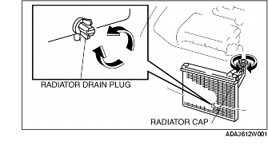
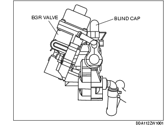

Engine coolant replacement [ZY]
- • Drain the engine coolant when the engine is cold, otherwise it can cause severe burns or serious injury.
- • The engine has aluminum parts that can be damaged by alcohol or methanol antifreeze. Do not use alocohol or methanol in the cooling system. Use only ethylene-glycol-based coolant.
- • Use only soft (demineralized) water in the coolant mixture. Water that contains minerals will reduce the coolant effectiveness.
- • Engine coolant will damage paint. Rinse it off quickly.
- • Use engine coolant at a concentration that meets the environmental conditions in which the vehicle is driven, otherwise engine damage could occur.
- • Always perform Steps 6 and 7 when filling the radiator with engine coolant as it is necessary to bleed air from the system.
- • If the "FL22" mark is shown on or near the cooling system cap, use FL22 type engine coolant.
-
• FL22 type engine coolant is shipped as a diluted solution (55% coolant, 45% water). Use the solution as is when replacing coolant.

1. Remove the coolant reservoir tank with the hose still connected.
2. Remove the coolant reservoir tank cap and drain the engine coolant from the coolant reservoir tank.
3. Remove the radiator cap.

4. Loosen the radiator drain plug and drain the engine coolant.
5. Let the system drain completely and tighten the radiator drain plug.
6. Remove the battery. (See BATTERY REMOVAL/INSTALLATION [ZY].)
7. Remove the blind cap.

8. Referring to the following chart, select the correct volume percentage of the water and engine coolant.
Antifreeze solution mixture percentage (Except FL22 type engine coolant)
9. Add the engine coolant into the radiator from the radiator mouth and verify that engine coolant begins to leak from the blind cap area.
10. Install the blind cap.
11. Install the battery. (See BATTERY REMOVAL/INSTALLATION [ZY].)
12. Add the engine coolant from the radiator mouth until it is close to the top of the radiator.
13. Pour the engine coolant into the coolant reservoir up to the F mark on the coolant reservoir.
14. Install the radiator cap and the coolant reservoir tank cap.
15. Start the engine and warm up the engine by idling.
- • If the engine coolant temperature becomes too high, stop the engine to prevent it from overheating.
16. After the engine warms up, perform the following steps.
- (1) Run the engine at approx. 2,500 rpm for 5 min.
- (2) Run the engine at approx. 3,000 rpm for 5 s, then idle it. Repeat this procedure several times.
17. Stop the engine, wait until it is cool, and check the engine coolant level. If it is low, repeat Steps 10-14.
18. Inspect the system for engine coolant leakage.